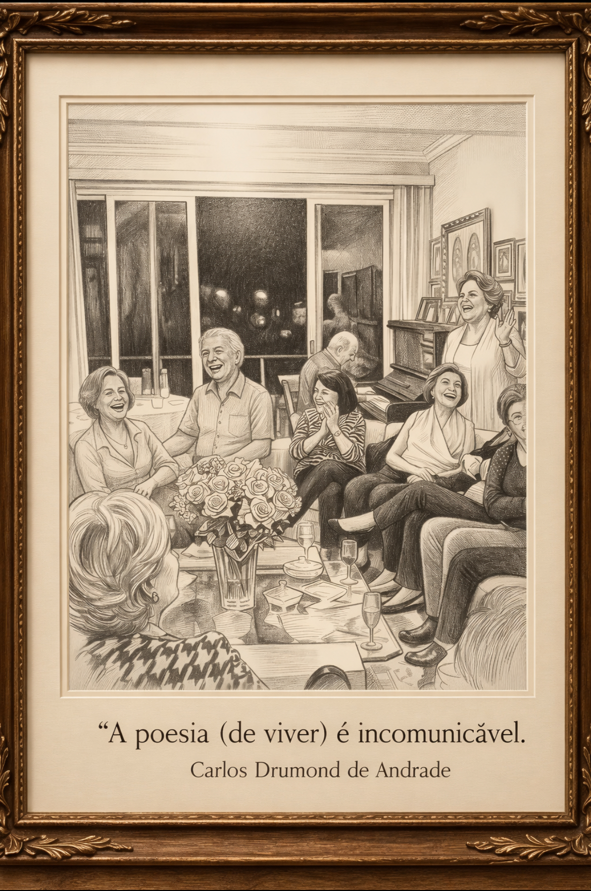

Maria Alvina nasceu em Belém do Pará, em 19 de maio de 1939. Era filha de Alvina Maria Hass Gonçalves e Heitor da Costa Gonçalves, e neta de Eduard Johannes Heinrich Hass — o arquiteto botânico que transformou o pensamento sistêmico europeu em sombra e água na Praça Batista Campos.
Cresceu entre duas cidades: Belém, onde a família Hass deixara raízes profundas, e o Rio de Janeiro, onde construiria sua vida adulta. Formou-se em Direito e dedicou grande parte de sua carreira à Petrobras, navegando pelas estruturas corporativas com a precisão discreta que caracterizava sua linhagem.
Por volta dos cinquenta anos, casou-se com Milton Curvo Paim, músico e pianista. Não tiveram filhos, mas construíram uma vida em torno da música, da cultura e da companhia silenciosa de quem se compreende.
O Cuidado e a Memória
A ligação de Maria Alvina com a família Hass sempre foi profunda. Foi ela quem cuidou de sua tia Ida Olympia Laura De Azevedo Hass, até seu falecimento no Rio de Janeiro, em 1986. Esse gesto silencioso — longe de olhares públicos — revela seu senso de responsabilidade familiar.
Para Maria Alvina, cuidado não era abstração. Era presença física, era atenção diária, era a recusa de abandonar — talvez justamente porque ela mesma conhecera a experiência de ser abandonada aos cuidados de um sistema institucional que, na tentativa de curar, também feria. Ela escolheu, como resposta, tornar-se guardiã: da tia, da memória, dos vínculos.
Era profundamente ligada aos antepassados, especialmente aos pais e aos irmãos. E criou, ao longo das décadas, uma rede de proteção afetiva que se estendia pelas gerações. Sua casa no Rio tornou-se porto para muitos: um espaço de acolhimento onde a mesa era conversa e a presença era proteção.
O Tempo
Carlos Drummond de Andrade
Quem teve a ideia de cortar o tempo em fatias,
a que se deu o nome de ano,
foi um individuo genial.
Industrializou a esperança,
fazendo-a funcionar no limite da exaustão.
Doze meses dão para qualquer ser humano se cansar
e entregar os pontos.
Aí entra o milagre da renovação
e tudo começa outra vez, com outro número
e outra vontade de acreditar
que daqui para diante tudo vai ser diferente.
Para você, desejo o sonho realizado,
o amor esperado,
a esperança renovada.
Para você, desejo todas as cores desta vida,
todas as alegrias que puder sorrir,
todas as músicas que puder emocionar.
Para você, neste novo ano,
desejo que os amigos sejam mais cúmplices,
que sua família seja mais unida,
que sua vida seja mais bem vivida.
Gostaria de lhe desejar tantas coisas…
Mas nada seria suficiente…
Então desejo apenas que você tenha muitos desejos,
desejos grandes.
E que eles possam mover você a cada minuto
ao rumo da sua felicidade.
Última mensagem enviada, dezembro de 2025:
"Um ano de 2026 com muita saúde e paz."
A Vida em Sua Complexidade
Maria Alvina tinha um temperamento único, alegre e festivo. Gostava de celebrar, especialmente seus aniversários, cercada de amigos e família. Mas quem a conhecia de perto sabia que essa alegria era também escolha — resistência contra a escuridão que, em alguns momentos da vida, a tocou de perto.
Em certos momentos da vida, ela atravessou períodos difíceis e conheceu de perto as limitações das formas de cuidado de seu tempo. Essa experiência, no entanto, não define sua história. Apenas acrescenta profundidade à sua trajetória: a de alguém que compreendeu, de forma íntima, a fragilidade das estruturas humanas — inclusive daquelas que existem para proteger.
E talvez fosse exatamente essa compreensão que a tornasse tão capaz de proteger, de acolher, de criar lar para quem ela conseguisse alcançar. Quem conhece a quebra desenvolve, muitas vezes, uma habilidade especial em sustentar. Ela escolheu, como resposta à própria vulnerabilidade, tornar-se guardiã.
Posição na Linhagem
Dentro da arquitetura genealógica da família Hass, Maria Alvina ocupa um lugar singular. Não foi teórica nem praticante de sistemas — foi herdeira, no sentido mais profundo: aquela que recebe, guarda, transmite e sobrevive.
Ela representa a prova de que o legado de Eduard Hass não se extinguiu em 1908, mas reverberou através de gerações em formas inesperadas: uma advogada no Rio de Janeiro, uma ouvinte de música de câmara, uma tia que cuida, uma bisavó que envia poesia. Alguém que transformou a experiência da vulnerabilidade em capacidade de amor.
O poema que ela enviou fala de renovação, de desejos grandes, de felicidade. Maria Alvina, que conhecera a exaustão, desejava para outros a capacidade de recomeçar. Ela mesma, tantas vezes, havia recomeçado.
O tempo é cortado em fatias chamadas anos.
Maria Alvina passou por muitos deles.
E em cada um, deixou de si: proteção, poesia, presença.
Belém do Pará — 19 de maio de 1939
Rio de Janeiro — 10 de março de 2026
🕊️
Memorial
Compartilhe sua memória de Maria Alvina

"A poesia (de viver) é incomunicável."
Homenagens
Nenhuma homenagem publicada ainda.
Seja o primeiro a compartilhar uma memória de Maria Alvina.